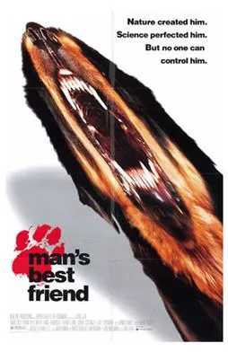

The genetics
Genetic engineering is the source of the threat. Max is a transgenic animal combining the DNA of several species, and each borrowed trait gives him a new ability, such as his strength, speed, senses and acidic urine, in the style of a monster film rather than real biology. His violent instability is the side effect the company tries to manage with drugs, and the final shot of a puppy he has fathered suggests that his engineered traits may now spread through breeding. The scientist, Dr. Jarret, is presented as an animal experimenter whose laboratory is exposed as a place of cruelty; he reports Max stolen instead of warning about the danger, and dies in his own facility. The film reflects early-1990s public unease about genetic engineering and animal experimentation. Real transgenic animals carry one or a few added genes, and nothing like a mixture of mammal, reptile and bird traits has been produced.
How genetics is portrayed
- Overall portrayal of genetics
- negative Genetic engineering is the source of the threat and is tied to vivisection and cruelty; the creator is a villain, and the ending, with a puppy that looks like Max, is ominous.
- Outcome of the genetic intervention
- negative The engineered dog is unstable and violent: he kills a mugger, a mailman, police officers and pets, maims Perry, and is finally shot; a final puppy suggests the traits will spread.
- Dr. Robert Jarret / EMAX
- villain Aim: not stated (not applicable). The owner of the EMAX genetic research company splices big-cat, snake, chameleon and raptor DNA into the dog Max; the purpose of the work is never stated. His lab is exposed as a place of cruelty, he reports Max stolen instead of warning of the danger, kidnaps Lori and is killed in his own facility as the film's mad-scientist villain.
The story
Television reporter and animal activist Lori Tanner breaks into the laboratories of EMAX, a genetic research company run by the scientist Dr. Jarret, and frees a Tibetan Mastiff named Max. She adopts him without knowing that he is the product of genetic engineering, spliced with DNA from big cats, snakes, chameleons and birds of prey, and that he needs a drug to keep his violent rages in check. Max is loyal and affectionate with Lori and can understand human speech, but when she is away he kills a mugger, a cat, a parakeet and a mailman, and sabotages the car of her boyfriend, Perry. When Lori gives him away, he kills the junkyard owner who abuses him and returns home to find he has been replaced by a puppy. The police hunt him, and Jarret kidnaps Lori to lure Max back to the lab, where the scientist shoots him and is himself electrocuted. Months later, a neighbour's collie gives birth to a puppy that looks like Max.